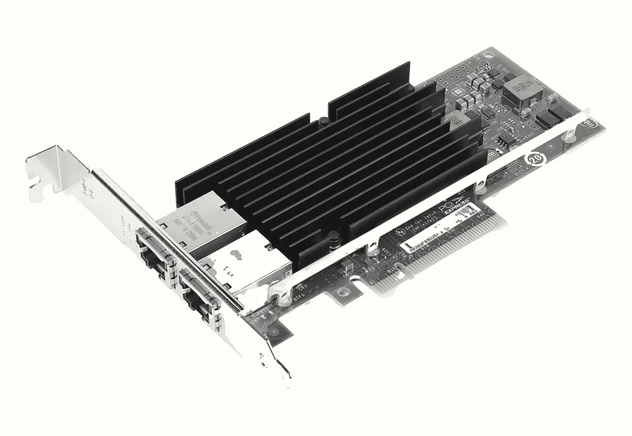
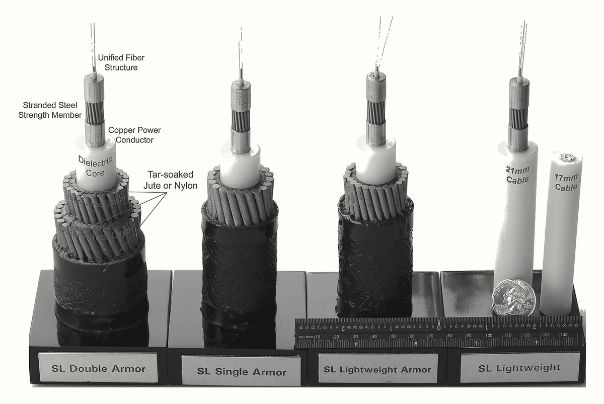
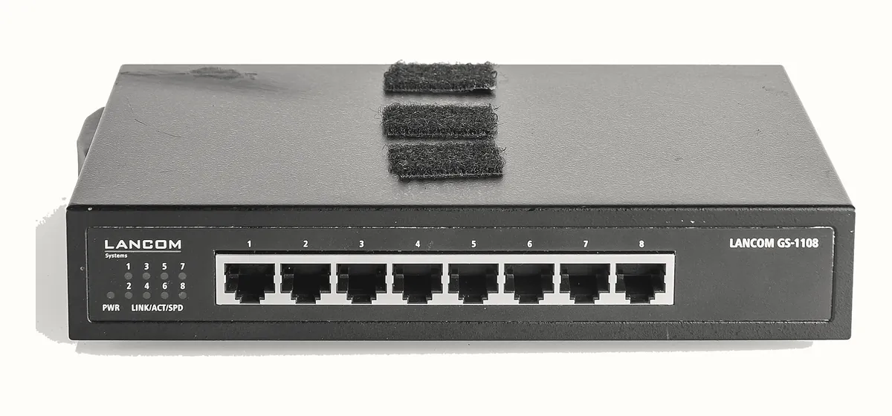
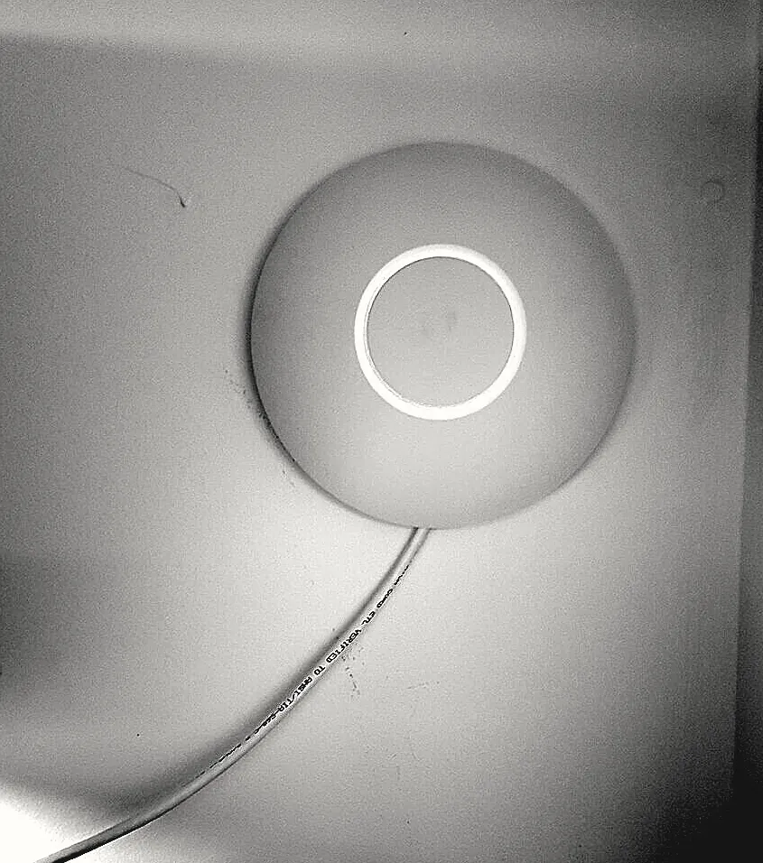
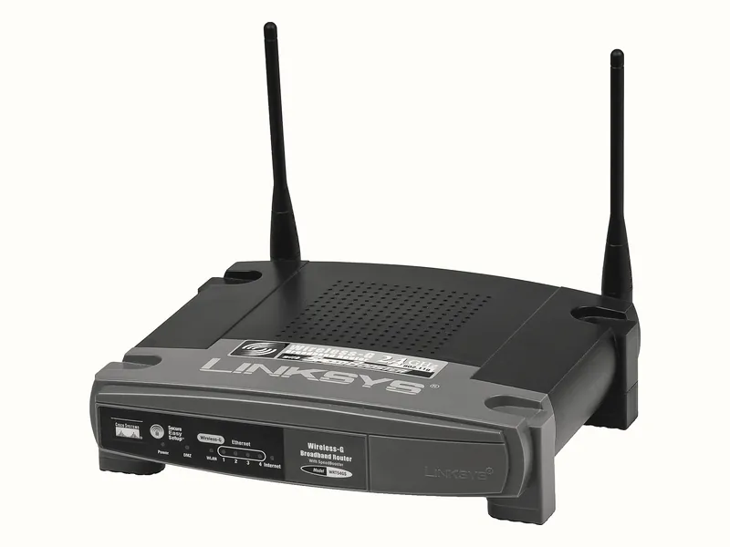

một cú like
phía sau trình duyệt có gì
Phía sau một cú like
Bạn có bao giờ tự hỏi, lúc gõ facebook.com rồi bấm like một bài, thì phía sau trình duyệt đã xảy ra những chuyện gì không? Trên màn hình chỉ thấy cái nút đổi màu và con số tăng lên một. Còn cú bấm đó thì phải rời khỏi máy bạn, đi qua cục phát WiFi trong nhà, qua mạng của nhà mạng, qua cả chục thiết bị chuyển tiếp nữa mới tới một server của Facebook. Ở đó nó được ghi lại, rồi một câu trả lời đi ngược về để con số trên màn hình bạn tăng lên.
Cả chục thiết bị là mình đếm thật. Ngày 30/10/2026 mình dò đường từ laptop của mình tới facebook.com thì dữ liệu đi qua 14 chặng, và một lượt đi về mất khoảng 20 mili giây. Bạn sẽ tự dò được đường đó ở phần Lab.
Chia việc thành tầng
Đưa một cú like đi xa như vậy là rất nhiều việc, nên người ta chia nó ra từng phần. Chuyện chia việc này bạn quen rồi: viết app Spring Boot thì bạn tách controller, service, repository. Controller nhận request rồi gọi service, service gọi repository, repository nói chuyện với database. Controller không cần biết database là PostgreSQL hay MySQL, đổi database thì chỉ sửa ở repository.
Mạng máy tính cũng chia việc như vậy. Mỗi phần việc gọi là một tầng (layer). Tầng trên nhờ tầng ngay dưới làm phần việc của nó, chứ không tự làm thay. Nhờ thế trình duyệt không cần biết máy bạn đang dùng WiFi hay cắm dây mạng: đổi từ dây sang WiFi thì chỉ tầng dưới cùng làm khác đi.
Bảy tầng của mô hình OSI
Vậy chia làm mấy tầng, mỗi tầng lo gì? Cách chia được dạy nhiều nhất là mô hình OSI (Open Systems Interconnection, kết nối các hệ thống mở). Cái tên nói luôn mục đích của nó: máy của hãng này nói chuyện được với máy của hãng khác, miễn là cùng chia việc theo một bản chung. Bản chia việc đó do ISO, tổ chức tiêu chuẩn quốc tế, công bố năm 1984. Bản đang dùng là ISO/IEC 7498-1:1994, và phát hành cùng nội dung dưới số hiệu X.200, tải về miễn phí. Bảy tầng được kể tên ở mục 6.1.2 của X.200, như Hình 1.
The Reference Model contains seven layers:
a) the Application Layer (layer 7);
b) the Presentation Layer (layer 6);
c) the Session Layer (layer 5);
d) the Transport Layer (layer 4);
e) the Network Layer (layer 3);
f) the Data Link Layer (layer 2); and
g) the Physical Layer (layer 1).
Đọc danh sách ở Hình 1 thì bảy cái tên đứng cạnh nhau, chưa thấy tầng nào cần tới tầng nào, nên rất khó nhớ. Nhưng các tầng nối với nhau theo một cách đơn giản: tầng nào cũng giải quyết đúng một chuyện mà tầng ngay dưới nó còn bỏ dở. Vì vậy học từ dưới lên là dễ nhất, bắt đầu từ chuyện cơ bản nhất là làm sao chở được dữ liệu từ máy này sang máy khác.
Tên tầng mình giữ tiếng Anh vì tài liệu nào cũng gọi như vậy, và người làm hạ tầng hay gọi luôn theo số, kiểu "lỗi tầng 7", " tầng 4". Để nhớ thứ tự từ dưới lên, người ta hay dùng câu Please Do Not Throw Sausage Pizza Away: chữ cái đầu mỗi từ ứng với Physical, Data Link, Network, Transport, Session, Presentation, Application.
tầng
12chở bit, tới máy kế bên
Tầng 1 Physical: chở số 0 và 1
Máy tính chỉ làm việc với số 0 và 1, mỗi số gọi là một bit. Muốn gửi bất cứ thứ gì, kể cả một cú like, thì trước hết phải có cách chở bit từ máy này sang máy khác. Đó là việc của tầng 1.
Tầng 1 biến bit thành thứ đi được trong thế giới thật: sóng radio nếu bạn dùng WiFi, xung điện nếu cắm dây mạng, xung ánh sáng nếu đi trong cáp quang. Đầu bên kia đổi tín hiệu ngược lại thành bit. Thiết bị làm việc này trong máy bạn là card mạng.

Ra khỏi nhà thì đoạn đường dài nhất thường là cáp quang. Giữa các châu lục, phần lớn lưu lượng Internet đi qua cáp quang đặt dưới đáy biển, như mấy mẫu cáp ở Ảnh 2.

Tầng 1 chỉ lo chở, không lo bit đi tới máy nào. Mà trong một căn nhà thì laptop, điện thoại, TV cùng bắt chung một sóng WiFi. Bit bay ra thì máy nào nhận?
Tầng 2 Data Link: tới đúng thiết bị kế bên
Để biết bit dành cho máy nào, card mạng nào cũng có một địa chỉ riêng, thường được gắn sẵn từ lúc sản xuất, gọi là
địa chỉ MAC. Địa chỉ MAC viết thành sáu cặp số , như card WiFi trên máy mình là
20-0B-74-xx-xx-xx (mình ẩn ba cặp cuối).
Tầng 2 bọc dữ liệu trong một lớp vỏ ghi MAC gửi và MAC nhận. Dữ liệu đã có lớp vỏ này gọi là frame (khung). Máy nào nhận được frame mà MAC nhận không phải của mình thì bỏ qua.
Trong mạng nhà bạn, thiết bị chuyển frame theo địa chỉ MAC là switch, nối các máy bằng dây, và access point, cho máy nối vào bằng sóng WiFi. Cục phát WiFi trong nhà thường gộp cả hai vào một hộp.


Nhưng MAC chỉ dùng được trong một mạng, kiểu trong nhà bạn. Server của Facebook nằm ở một mạng khác, cách nhà bạn cả chục mạng, và laptop của bạn không gửi frame thẳng tới đó được. Muốn đi xa thì cần thêm một tầng nữa.
tầng
34đi xa, tới đúng chương trình
Tầng 3 Network: đi qua nhiều mạng tới đúng máy
Tầng 3 cho mỗi máy một địa chỉ dùng được trên cả Internet, gọi là địa chỉ IP. Địa chỉ của facebook.com
lúc mình hỏi ngày 30/10/2026 là 57.144.64.1. Tầng 3 gắn vào dữ liệu một phần đầu ghi IP gửi và IP nhận, và dữ
liệu có phần đầu này gọi là gói tin (packet).
Thiết bị nối các mạng với nhau là router. Router nhận gói tin, đọc IP nhận, rồi chuyển gói sang mạng gần đích hơn. Router đầu tiên là cục phát WiFi trong nhà bạn. Từ laptop của mình tới facebook.com, gói tin đi qua 14 chặng như thế.

Tới đây tầng 2 và tầng 3 ghép thành một bức tranh, và đây là bức tranh đáng nhớ nhất của bài. Địa chỉ IP ghi máy đầu và máy cuối, nên nó giữ nguyên suốt đường đi. Còn vỏ MAC chỉ dùng cho một bước nhảy: ở mỗi router, vỏ MAC cũ bị bóc ra, router đọc IP để chọn hướng, rồi bọc một vỏ MAC mới ghi địa chỉ của thiết bị kế tiếp.
Gói tin tới đúng máy rồi. Nhưng server của Facebook chạy nhiều chương trình cùng lúc, vậy gói tin này giao cho chương trình nào?
Tầng 4 Transport: tới đúng chương trình, đủ và đúng thứ tự
Tầng 4 cho mỗi chương trình nhận kết nối một con số riêng, gọi là port. Trang như
facebook.com dùng port 443. App Spring Boot bạn chạy ở localhost:8080 thì 8080 là port của nó.
Tầng 4 còn lo một chuyện nữa. Mạng chỉ chở từng mẩu nhỏ, trên mạng thường thì mỗi mẩu tối đa khoảng 1.500 byte, và qua cả chục router thì mẩu có thể mất hay tới sai thứ tự.
Giao thức hay dùng nhất ở tầng này là TCP (Transmission Control Protocol). TCP cắt dữ liệu thành mẩu, đánh số từng mẩu, gửi lại mẩu bị mất, và ráp lại đúng thứ tự ở đầu kia. Trước khi gửi, TCP ở hai máy trao đổi vài mẩu để mở một kết nối. Bên cạnh TCP còn UDP, cũng ghi port nhưng không mở kết nối và không gửi lại mẩu mất, hợp với những thứ hỏi đáp gọn trong một mẩu.
Tới đây bốn tầng dưới đã đưa được một khối byte tới đúng chương trình trên đúng máy. Nhưng khối byte đó nói gì, viết theo kiểu nào để hai chương trình hiểu nhau? Đó là phần của ba tầng trên.
tầng
567phần của chương trình
Ba tầng trên nằm trong chính chương trình ở hai đầu, là trình duyệt của bạn và server của Facebook. Các router ở giữa không đụng tới chúng.
Tầng 5 Session: giữ cuộc trao đổi
Tầng 5 lo mở, giữ và đóng một cuộc trao đổi giữa hai chương trình. Bạn like xong lại like bài khác, cuộn bảng tin, và trình duyệt dùng tiếp cuộc trao đổi đang có với server chứ không mở lại từ đầu cho mỗi việc.
Tầng 6 Presentation: hai đầu hiểu dữ liệu như nhau
Tầng 6 lo dữ liệu được biểu diễn theo một kiểu mà hai đầu cùng hiểu, ví dụ chữ có dấu tiếng Việt phải được đổi thành byte theo cùng một bảng mã ở cả hai đầu.
Mã hoá cũng hay được xếp vào tầng này. facebook.com chạy https, chữ s nghĩa là dữ liệu được mã
hoá bằng TLS (Transport Layer Security) trước khi rời máy bạn, nên các thiết bị đứng giữa đường chỉ thấy
một khối byte không đọc được.
Tầng 5 và tầng 6 có một điểm lạ: trên Internet ngày nay không có phần mềm nào chỉ làm việc của tầng 5, cũng không có phần mềm nào chỉ làm việc của tầng 6. Việc của chúng nằm rải trong trình duyệt, trong thư viện TLS và trong chính app, nên hai tầng này thường chỉ được nói lướt như vậy.
Tầng 7 Application: viết ra lời nhắn like
Tầng 7 là chỗ cú like được viết ra. Đoạn JavaScript gắn với nút like trên trang facebook.com viết một lời nhắn gửi cho server, đại ý "người dùng này like bài viết kia", theo HTTP (Hypertext Transfer Protocol), quy ước chung về cách trình duyệt và server nói chuyện với nhau.
HTTP thì bạn quen rồi, chỉ là từ phía server: controller có @PostMapping nhận đúng loại lời nhắn này, và
controller của bạn đứng ở tầng 7. Đường dẫn và nội dung thật mà Facebook dùng thì mình không xem được khi chưa đăng nhập,
nên Hình 3 chỉ là dạng chung của nó.
POST /<đường dẫn của Facebook> HTTP/1.1
Host: www.facebook.com
Content-Type: application/json
Cookie: <phiên đăng nhập của bạn>
{"bai_viet": "123456", "hanh_dong": "like"}Trước request đó còn một việc nữa, cũng ở tầng 7. Trình duyệt chỉ biết cái tên www.facebook.com, nên nó hỏi
DNS (Domain Name System) để đổi tên thành địa chỉ IP, có địa chỉ rồi tầng 3 mới có cái để ghi vào phần
đầu IP.
đường đi
7654321đi xuống, đi qua, đi lên
Đủ bảy tầng rồi. Lúc bạn bấm like, mọi thứ chạy theo chiều ngược với thứ tự vừa học: lời nhắn sinh ra ở tầng 7 rồi đi dần xuống tầng 1.
Đi xuống: mỗi tầng bọc thêm một lớp
Đi từ trên xuống, mỗi tầng nhận thứ tầng trên đưa xuống và coi nó là một khối byte. Nó không đọc bên trong khối đó, chỉ gắn thêm phần đầu của mình rồi giao xuống tiếp. Cách xếp lớp này gọi là encapsulation (đóng gói). Hình 4 chạy cả hai chiều: máy bạn đóng gói, server bóc ra.
POST ... likeHost: facebook.comtầng 7gắn sau cùng, bóc đầu tiên
viết đầu tiên, đọc sau cùng
Hình 4 giống một lá thư bỏ vào phong bì, phong bì đó lại bỏ vào một phong bì to hơn, mỗi phong bì ghi một loại địa chỉ: phong bì trong cùng ghi tên chương trình nhận (port), phong bì giữa ghi địa chỉ nhà (IP), phong bì ngoài cùng ghi người đưa thư kế tiếp (MAC). Ẩn dụ này hết đúng ở hai chỗ. Phong bì MAC bị vứt và thay cái mới ở mỗi bước nhảy, còn thư thật thì không ai thay phong bì giữa đường. Và TCP cắt lá thư ra thành nhiều mẩu, mỗi mẩu một bộ phong bì riêng.
Đi qua rồi đi lên
Rời máy bạn ở tầng 1, gói tin đi qua cục phát WiFi, nhà mạng và các router, tới server thì đi ngược từ tầng 1 lên tầng 7: card mạng nhận tín hiệu, tầng 2 bóc vỏ MAC, tầng 3 thấy IP nhận đúng là máy mình, tầng 4 đọc port 443 để giao cho đúng chương trình và ráp các mẩu lại, TLS giải mã, cuối cùng chương trình của Facebook đọc được lời nhắn like. Câu trả lời "đã like" đi lại quy trình đó theo chiều ngược lại.
máy bạn, đi xuống
server của Facebook, đi lên
Router chỉ mở tới tầng 3
Máy bạn và server cần đủ bảy tầng, vì một bên viết lời nhắn còn bên kia đọc nó. Router đứng giữa đường thì chỉ cần ba tầng dưới: mục 6.1.6 của X.200 nói việc chuyển tiếp giữa đường được "provided in the lower layers", tức do các tầng dưới lo. Hình 6 vẽ lại cảnh đó theo Figure 12 của X.200.
máy bạn
router
server
Hình 6 là bức tranh IP giữ, MAC đổi ở Hình 2 nhìn từ một phía khác: router bóc vỏ MAC, đọc IP ở tầng 3, rồi bọc vỏ MAC mới và đẩy đi. Bốn tầng trên chỉ có ở hai máy hai đầu, nên dù có 14 router ở giữa, không router nào biết bạn vừa bấm like, và nhờ TLS thì cũng không router nào đọc được dù có muốn.
Biết tầng để làm gì
Người làm hạ tầng gặp lỗi mạng thì hỏi trước tiên là hỏng ở tầng nào, vì mỗi tầng hỏng một kiểu và có cách soi riêng. Bảng 1 xếp vài triệu chứng hay gặp theo tầng, kèm bên nào viết ra thông báo lỗi đó.
| Triệu chứng | Tầng | Ai viết ra | Soi bằng |
|---|---|---|---|
| Biểu tượng mạng gạch chéo, không bắt được WiFi | 1, 2 | hệ điều hành | xem WiFi, dây mạng |
tracert dừng ở một router, các dòng sau toàn dấu sao | 3 | tracert | tracert |
Connection refused: máy đích trả lời ngay là không có chương trình nào nghe ở port đó | 4 | máy đích | curl -v |
| Trình duyệt báo chứng chỉ không hợp lệ hoặc hết hạn | giữa 4 và 7 (TLS) | trình duyệt | curl -v |
Non-existent domain, Could not resolve host | 7 (DNS) | server DNS, hoặc chương trình không hỏi được DNS | nslookup |
Dòng Could not resolve host có một chỗ dễ lừa: thông báo là của tầng 7, nhưng lý do có khi nằm tận tầng 1.
Máy mất WiFi thì việc đầu tiên hỏng là hỏi DNS, nên chương trình báo không tìm được tên chứ không báo mất mạng. Lab sẽ cho
bạn thấy cảnh này.
lab
soi từng tầng trên máy bạn
Lab này soi cú like ở vài tầng bằng những lệnh có sẵn trên Windows, chạy trong Git Bash. Output là của máy mình ngày 30/10/2026; máy bạn sẽ ra địa chỉ và thời gian khác, cách đọc thì vẫn vậy.
# Lab 1: tầng 2, địa chỉ MAC của các card mạng
getmac
# Lab 2: tầng 3, dò chuỗi router tới facebook.com
tracert -d facebook.com
# Lab 3: tầng 7, hỏi DNS
nslookup facebook.com
# Lab 4: tầng 4 và tầng 7 trong một lần gọi
curl -v -o /dev/null https://www.facebook.com/
# Lab 5: tự gây lỗi
nslookup khong-ton-tai-dau-nhe-12345.comLab 1: tầng 2, địa chỉ MAC
$ getmac
Physical Address Transport Name
=================== ===========================================
00-FF-78-xx-xx-xx \Device\Tcpip_{...}
E8-9C-25-xx-xx-xx Media disconnected
20-0B-74-xx-xx-xx \Device\Tcpip_{...}Mỗi dòng là một card mạng, cột trái là địa chỉ MAC (Windows gọi là Physical Address). Máy mình có ba card: một card ảo
do phần mềm tạo ra, một card đang không nối mạng (Media disconnected, theo mình đoán là cổng dây mạng vì
máy không cắm dây), và card WiFi đang dùng. Một máy có nhiều card thì có nhiều địa chỉ MAC.
Lab 2: tầng 3, dò chuỗi router
Lệnh tracert trên Windows (trên Linux là traceroute) liệt kê các router mà gói tin đi qua; cờ
-d bảo lệnh khỏi đổi địa chỉ IP thành tên cho nhanh. Hình 7 là kết quả trên máy mình, địa chỉ các router của
nhà mạng đã được ẩn vì chúng cho biết mạng nhà mình nằm ở đâu.
- 1192.168.10.333 ms · 1 ms · 1 ms
- 2192.168.1.11 ms · 1 ms · 1 ms
- 3(router nhà mạng, đã ẩn)2 ms · 4 ms · 2 ms
- 4(router nhà mạng, đã ẩn)21 ms · 2 ms · 2 ms
- 5(router nhà mạng, đã ẩn)9 ms · 2 ms · 2 ms
- 6Request timed out.* · * · *
- 7(router nhà mạng, đã ẩn)4 ms · 2 ms · 2 ms
- 8(router nhà mạng, đã ẩn)9 ms · 3 ms · 4 ms
- 9(router nhà mạng, đã ẩn)70 ms · 53 ms · 102 ms
- 10157.240.68.6625 ms · 89 ms · 30 ms
- 11147.75.211.10120 ms · * · 27 ms
- 12129.134.62.49129 ms · 101 ms · 110 ms
- 13129.134.95.21820 ms · 21 ms · 22 ms
- 1457.144.64.119 ms · 19 ms · 19 ms
output nguyên văn
$ tracert -d facebook.com
Tracing route to facebook.com [57.144.64.1]
over a maximum of 30 hops:
1 3 ms 1 ms 1 ms 192.168.10.33
2 1 ms 1 ms 1 ms 192.168.1.1
3 2 ms 4 ms 2 ms (router nhà mạng, đã ẩn)
4 21 ms 2 ms 2 ms (router nhà mạng, đã ẩn)
5 9 ms 2 ms 2 ms (router nhà mạng, đã ẩn)
6 * * * Request timed out.
7 4 ms 2 ms 2 ms (router nhà mạng, đã ẩn)
8 9 ms 3 ms 4 ms (router nhà mạng, đã ẩn)
9 70 ms 53 ms 102 ms (router nhà mạng, đã ẩn)
10 25 ms 89 ms 30 ms 157.240.68.66
11 120 ms * 27 ms 147.75.211.10
12 129 ms 101 ms 110 ms 129.134.62.49
13 20 ms 21 ms 22 ms 129.134.95.218
14 19 ms 19 ms 19 ms 57.144.64.1
Trace complete.Hai dòng đầu có địa chỉ 192.168..., loại địa chỉ chỉ dùng trong mạng nội bộ: dòng 1 là cục phát WiFi, dòng
2 theo mình đoán là của nhà mạng đặt trong nhà. Dòng 6 toàn dấu sao nghĩa là router đó không trả lời lệnh dò này,
chứ gói tin không mất ở đó, vì các dòng sau vẫn có. Tới dòng 14 thì ra 57.144.64.1, địa chỉ của
facebook.com. Lệnh chạy hơi lâu, mỗi dòng có dấu sao phải chờ vài giây.
Lab 3: tầng 7, hỏi DNS
$ nslookup facebook.com
Server: (tên router, đã ẩn)
Address: fe80::10
Non-authoritative answer:
Name: facebook.com
Addresses: 2a03:2880:f31a:1:face:b00c:0:25de
57.144.64.1Khối trên cho biết ai trả lời: cục phát WiFi trong nhà, nó hỏi tiếp giúp rồi đưa lại câu trả lời. Khối dưới là hai địa
chỉ. 57.144.64.1 là địa chỉ kiểu cũ, IPv4, cũng là dòng cuối ở Hình 7. Dòng dài kia là địa chỉ kiểu mới,
IPv6, và trong nó có đoạn face:b00c, đọc lên nghe như "facebook": địa chỉ IPv6 viết bằng hex nên mấy chữ a tới
f dùng được, và Facebook chọn con số đó cho dễ nhận ra.
Lab 4: tầng 4 và tầng 7 trong một lần gọi
curl là chương trình gửi request HTTP từ dòng lệnh, cờ -v bảo nó kể lại từng bước, còn
-o /dev/null bỏ nội dung trang đi cho output khỏi dài.
* Host www.facebook.com:443 was resolved.
* IPv6: (none)
* IPv4: 57.145.12.1
* Trying 57.145.12.1:443...
* schannel: disabled automatic use of client certificate
* Connected to www.facebook.com (57.145.12.1) port 443
> GET / HTTP/1.1
> Host: www.facebook.com
> User-Agent: curl/8.10.1
* schannel: remote party requests renegotiation
* schannel: renegotiating SSL/TLS connection
* schannel: SSL/TLS connection renegotiated
< HTTP/1.1 200 OKcurl -v https://www.facebook.com/, ngày 30/10/2026, giữ đúng thứ tự dòng,
chỉ bỏ bớt các header nhận về và các dòng báo lặp ở cuối. Dòng bắt đầu bằng * là lời curl tự kể,
> là dữ liệu gửi đi, < là dữ liệu nhận về.Ba dòng đầu là DNS ở tầng 7 đã trả lời địa chỉ của www.facebook.com; địa chỉ này khác
facebook.com ở Lab 3 vì đó là hai cái tên khác nhau. Dòng Connected ... port 443 là TCP ở tầng 4
đã mở xong kết nối tới port 443. Sau đó tới lời nhắn HTTP ở tầng 7: GET đi ra, 200 OK về. Bắt tay
TLS diễn ra giữa dòng Connected và dòng GET, nhưng bản curl đi kèm Git for Windows dùng schannel,
thư viện TLS của Windows, và nó gần như không kể gì về bước này; ba dòng schannel phía sau là server đòi thương
lượng lại TLS giữa chừng, bỏ qua được.
Lab 5: tự gây lỗi
Bước đầu, hỏi DNS một cái tên chắc chắn chưa ai đăng ký:
$ nslookup khong-ton-tai-dau-nhe-12345.com
*** (tên router, đã ẩn) can't find khong-ton-tai-dau-nhe-12345.com: Non-existent domainLỗi này nằm ở tầng 7: server DNS trả lời được, chỉ là cái tên không có. Lúc đó chưa có kết nối TCP nào được mở, chưa có gói tin nào gửi tới server nào, vì chưa có địa chỉ để gửi.
Bước thứ hai, tắt WiFi (và rút dây mạng nếu có cắm), rồi chạy lại Lab 4. Mình chưa chạy bước này trên máy mình, nên dòng dưới là kỳ vọng chứ không phải output thật:
$ curl -v -o /dev/null https://www.facebook.com/
* Could not resolve host: www.facebook.com
curl: (6) Could not resolve host: www.facebook.comHỏng ở tầng 1, nhưng thông báo lại nói về DNS ở tầng 7, vì việc đầu tiên curl làm là hỏi DNS, và không có mạng thì câu hỏi đó hỏng trước mọi thứ khác. Muốn phân biệt "tên miền không tồn tại" với "máy mất mạng" thì chạy Lab 3: còn hỏi được DNS thì máy vẫn có mạng. Bật WiFi lại rồi chạy lại Lab 4 cho chắc mọi thứ đã về như cũ.
tự kiểm tra
tự kiểm tra và nguồn đọc thêm
Tự kiểm tra
Bấm vào từng dòng khi bạn tự trả lời được mà không nhìn lại bài. Tự chấm bằng cách giải thích cho một người chưa học, bằng lời của bạn, kèm một ví dụ.
- Kể được bảy tầng từ dưới lên, mỗi tầng giải quyết chuyện gì mà tầng dưới còn bỏ dở
- Nói được vì sao chia việc thành tầng, và so được với việc tách controller, service, repository
- Chỉ ra được địa chỉ MAC thuộc tầng nào, địa chỉ IP thuộc tầng nào, port thuộc tầng nào
- Giải thích được vì sao địa chỉ IP giữ nguyên suốt đường đi còn vỏ MAC đổi ở mỗi bước nhảy
- Kể được thứ tự các lớp được gắn vào gói tin lúc cú like đi xuống, và thứ tự bóc ra ở server
- Nói được router đọc tới tầng mấy, và vì sao router không biết bạn vừa bấm like
- Đọc được output của
curl -vvà chỉ ra dòng nào thuộc tầng nào - Giải thích được vì sao mất WiFi mà curl lại báo
Could not resolve host
Nguồn đọc thêm
- ITU-T X.200 (07/1994), Information technology, Open Systems Interconnection, Basic Reference Model: The basic model. Văn bản chuẩn của mô hình OSI, tải miễn phí; bảy tầng ở mục 6.1.2, chuyển tiếp ở tầng dưới ở mục 6.1.6. itu.int/rec/T-REC-X.200-199407-I
- ISO/IEC 7498-1:1994, cùng nội dung với X.200, phát hành bởi ISO; toàn văn phải trả phí. iso.org/standard/20269.html
- RFC 9110, HTTP Semantics. rfc-editor.org/rfc/rfc9110
- RFC 8446, The Transport Layer Security (TLS) Protocol Version 1.3. rfc-editor.org/rfc/rfc8446
- RFC 9293, Transmission Control Protocol (TCP). rfc-editor.org/rfc/rfc9293
- RFC 791, Internet Protocol. rfc-editor.org/rfc/rfc791
- RFC 1035, Domain Names, Implementation and Specification. rfc-editor.org/rfc/rfc1035
- Microsoft, trang hướng dẫn lệnh
tracert. learn.microsoft.com/…/windows-commands/tracert - curl, trang hướng dẫn chính thức, gồm cờ
-v. curl.se/docs/manpage.html